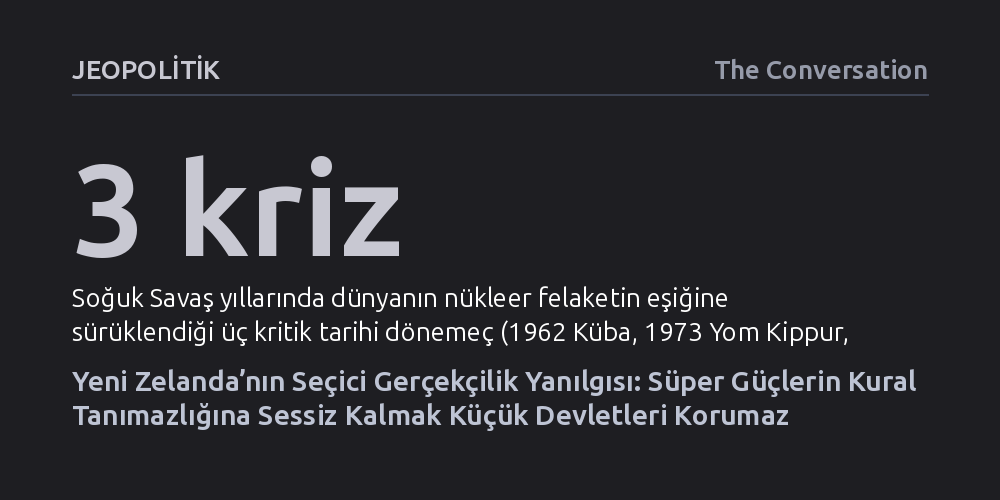

JEOPOLITIK · The Conversation · 2026-10-12
Yeni Zelanda'nın büyük güç rekabeti karşısında sığındığı sessiz gerçekçilik, müttefiki ABD'nin hukuksuzluklarına göz yumduğu için ülkeyi korumuyor. Küçük devletlerin geleceği, süper güçlerin keyfiliğine teslim olmakta değil, kurallara dayalı düzene muhtaç diğer ülkelerle dayanışmakta yatıyor.
Küçük devletlerin büyük güçlerin kural tanımazlığına boyun eğmek zorunda olmadığını ve dış politikada tarafsız veya sessiz kalmanın aslında mevcut adaletsiz düzeni normalleştirdiğini gösterir.

Yeni Zelanda 2026 genel seçimlerine yaklaşırken, koalisyon hükümeti son üç yılda izlediği dış politika çizgisini savunma ihtiyacı hissediyor. Dışişleri Bakanı Winston Peters, İkinci Dünya Savaşı'nın bittiği 1945 yılından bu yana en tehlikeli küresel koşullarla karşı karşıya olunduğunu öne sürerek ticaret korumacılığı, BM Güvenlik Konseyi'ndeki veto kilitlenmeleri ve Pasifik'teki jeopolitik manevraları gerekçe gösteriyor. Peters'a göre kurallara dayalı uluslararası düzen yerini çıplak güç rekabetine bırakmış durumda; bu yüzden hükümet, dünyayı hayal edildiği gibi değil olduğu gibi kabullenen pragmatik bir realizm ve sessiz diplomasi benimsediğini savunuyor.
Ne var ki hükümetin küresel tabloya dair bu karamsar teşhisi ciddi mantıksal boşluklar içeriyor. Günümüzdeki güç mücadeleleri, dünyanın 1962 Küba füze bunalımı, 1973 Yom Kippur savaşı ya da 1983 Able Archer tatbikatı gibi anlarda nükleer bir yok oluşun kıyısına geldiği Soğuk Savaş dönemiyle kesinlikle kıyaslanamaz. Dahası, kural tanımaz güç siyasetine savrulan kesim tüm dünya değil; temel olarak BM Güvenlik Konseyi'nin veto yetkisine sahip üç daimi üyesi ve onların dar müttefik çevresiyle sınırlı kalıyor.
Dünyadaki devletlerin ezici çoğunluğu, varlıklarını ve refahlarını büyük askeri güç gösterilerine değil, işleyen uluslararası kurallara borçlu olan küçük ve orta ölçekli ülkelerden oluşuyor. Ticaretten sivil havacılığa, turizmden bilimsel işbirliklerine ve diplomasiye kadar hemen her alanda bu ülkeler ortak normlara uymayı sürdürüyor. Dolayısıyla küresel sistemin tamamen kural dışı bir anarşiye teslim olduğunu varsaymak, küçük devletlerin kendi haklarını koruyan zemini erkenden terk etmesi anlamına geliyor.
Süper güçlerin yarattığı çalkantılar bu gerçeği değiştirmediği gibi, uluslararası kuralların küçük devletler için taşıdığı hayati önemi daha da artırıyor. Kurallardan vazgeçilip güce teslim olunduğu peşinen kabul edildiğinde, Yeni Zelanda gibi askeri ve ekonomik kapasitesi sınırlı aktörlerin elindeki meşru pazarlık kozları da tamamen buharlaşıyor.
Hükümetin sözde gerçekçi yaklaşımının en zayıf noktasını, krizlerin sorumlularını belirlerken takındığı seçici tutum oluşturuyor. Wellington yönetimi Rusya'nın Ukrayna'yı işgalini ya da Çin'in Pasifik'teki füze denemelerini haklı olarak açıkça kınarken, benzer bir ahlaki ve hukuki ölçütü ABD için işletmekten ısrarla kaçınıyor. Washington'ın Pasifik'e askeri olarak daha fazla yerleşmesi memnuniyetle karşılanıyor ve Trump yönetiminin Gazze, Ukrayna, Venezuela ya da İran konusunda uluslararası hukuku çiğnemesine karşı sessiz kalınıyor.
Ancak müttefike gösterilen bu aşırı hoşgörü Yeni Zelanda'yı Amerikan korumacılığının ekonomik faturalarından ya da Orta Doğu gerilimlerinin maliyetlerinden korumuş değil. Ortak değerlerin giderek aşındığı bir dönemde askeri bağları tek taraflı derinleştirmek stratejik bir güvence sağlamıyor. Üstelik iklim krizi, salgın hastalıklar ve kırılgan tedarik zincirleri gibi sınır tanımayan tehditlerin hiçbiri süper güçlerin bencil tek taraflılığıyla çözülemez; bu alanlar tavizsiz bir çok taraflı işbirliğini zorunlu kılıyor.
Tarihsel deneyimler, tek taraflı güç kullanımının süper güçlere dahi arzuladıkları sonuçları getirmediğini defalarca kanıtladı; Irak ve Ukrayna'da yaşanan felaketlerin ardından İran batağı da bunun en somut örneği. Birkaç büyük gücün hegemonyasına dayalı İkinci Dünya Savaşı sonrası dünya düzeni son demlerini yaşarken, yeni ve dengeli bir nizamın doğumu sancılı geçiyor. Fakat bu geçiş süreci, küçük ve orta ölçekli devletlerin seyirci kalmaya mahkûm olduğu anlamına gelmiyor.
Yaklaşan seçimlerin ardından göreve gelecek Yeni Zelanda hükümeti kritik bir tercih yapmak zorunda kalacak. Ya büyük güçlerin hukuksuzluklarını görmezden gelip mevcut çifte standardı sessizce normalleştirmeye devam edecek; ya da tıpkı kendisi gibi hukuka ve kurallara dayalı bir uluslararası sisteme muhtaç olan diğer küçük ve orta ölçekli devletlerle safları sıklaştırarak ortak bir denge inşa edecek.